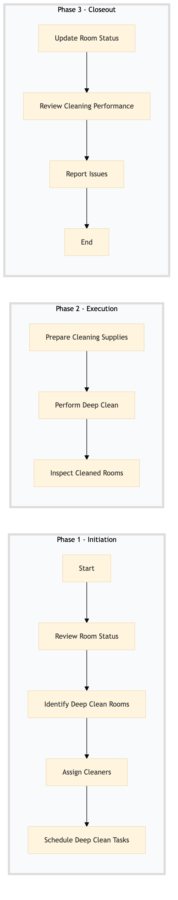

| Role | Steps |
|---|---|
| Executive Housekeeper | 1.1 1.2 1.4 3.1 3.2 |
| Housekeeping Supervisor | 1.3 2.3 3.3 |
| Housekeeping Staff | 2.1 2.2 |
| Step | Name | Role | System | Input | Output | KPI | Dec? | Exc? | Pain Point / Risk |
|---|---|---|---|---|---|---|---|---|---|
| 1.1 | Review Room Status | Executive Housekeeper | Oracle OPERA Cloud | Room status report | Updated room status list | Less than 5 minutes per review | Y | N | Accurate and up-to-date room status is crucial for efficient cleaning scheduling. |
| 1.2 | Identify Deep Clean Rooms | Executive Housekeeper | Oracle OPERA Cloud | Room status list | Deep clean room list | Less than 3 minutes per identification | N | Y | Incorrectly identifying rooms for deep cleaning can lead to missed maintenance. |
| 1.3 | Assign Cleaners | Housekeeping Supervisor | Oracle OPERA Cloud | Deep clean room list | Cleaner assignment sheet | Less than 2 minutes per assignment | N | Y | Overloading cleaners with tasks can lead to rushed and incomplete work. |
| 1.4 | Schedule Deep Clean Tasks | Housekeeping Supervisor | Oracle OPERA Cloud | Cleaner assignment sheet | Deep clean schedule | Less than 5 minutes per task scheduling | N | Y | Poorly scheduled tasks can lead to overlapping duties and inefficiencies. |
| 2.1 | Prepare Cleaning Supplies | Housekeeping Staff | Birchstreet Procurement | Deep clean schedule | Supplies checklist | Less than 3 minutes per preparation | N | Y | Insufficient supplies can delay cleaning tasks and affect guest satisfaction. |
| 2.2 | Perform Deep Clean | Housekeeping Staff | Oracle OPERA Cloud | Supplies checklist | Cleaning log | Less than 15 minutes per room | N | Y | Inadequate cleaning can lead to hygiene issues and guest complaints. |
| 2.3 | Inspect Cleaned Rooms | Housekeeping Supervisor | Oracle OPERA Cloud | Cleaning log | Inspection report | Less than 5 minutes per inspection | Y | N | Missed inspections can result in unclean rooms and guest dissatisfaction. |
| 3.1 | Update Room Status | Executive Housekeeper | Oracle OPERA Cloud | Inspection report | Updated room status in PMS | Less than 2 minutes per update | N | Y | Outdated room statuses can lead to scheduling conflicts and operational inefficiencies. |
| 3.2 | Review Cleaning Performance | Housekeeping Supervisor | Oracle OPERA Cloud | Cleaning log and inspection report | Performance review report | Less than 10 minutes per review | Y | N | Inadequate performance reviews can lead to poor cleaning standards and guest complaints. |
| 3.3 | Report Issues | Housekeeping Supervisor | Oracle OPERA Cloud | Performance review report | Issue resolution plan | Less than 5 minutes per reporting | Y | N | Unreported issues can escalate and affect overall hotel operations. |
The Deep Clean Scheduling & Execution process ensures that all public areas and high-traffic rooms in a Marriott full-service hotel are thoroughly cleaned on a regular basis to maintain hygiene standards and guest satisfaction.